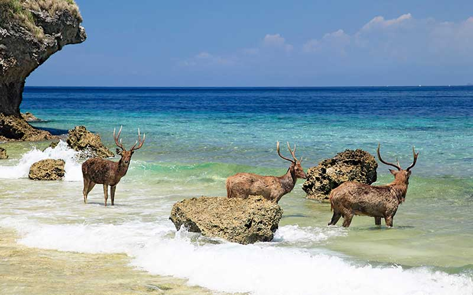

1. West Bali national park
West Bali national park is one of the conservation parks in the island of Bali.
This national park was established in 1995. With a total area of 190.02 km2,
this conservation park is home to 160 species of flora and fauna.

2. Bogor botanical garden
Bogor botanical garden is one of the largest botanical gardens in Indonesia. This garden
has an area of 87 hectares, it is also home to 15 000 kinds of plants and animals such as
insects, birds, and orchids.